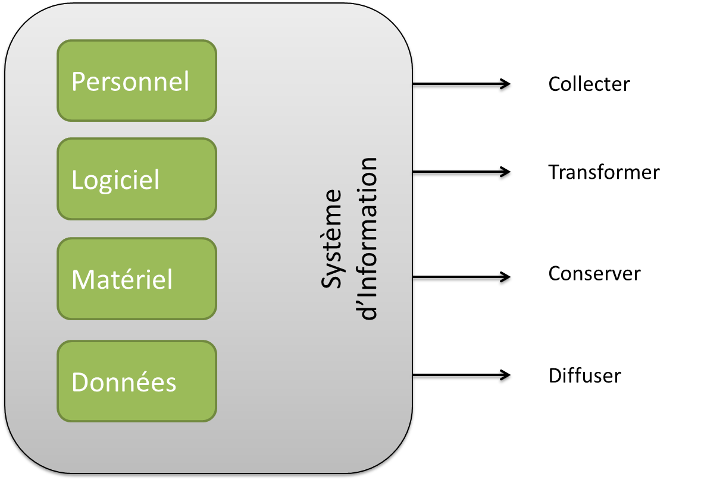

Architecture des systèmes d'informations
Quelques présentations ...
Whoami ?
Damien DUPORTAL
- DevOps Engineer @ Worldline (Atos)
- damien.duportal@worldline.com
- damien.duportal@gmail.com
- @DamienDuportal
- dduportal
Le système d'information

Principes d'architectures
Universitaire
- Cours ACSI [2007] - Olivier GUIBERT - IUT Bordeaux 1
- Intro. à l'ACSI [2005/2006] - Yannick PRIE - Miage Lyon 1
- ASI [2009] - Jacques LAFORGUE - CNAM Midi-Pyrénées
- La Virtualisation (Projet de recherche) [2009/2010] - François SANTY - Université Libre de Bruxelles
- Virtualisation [2012] - Nicolas DEWAELE - Cours GRETA Académie du Nord
Autres
- Wikipédia - Merci la communauté
- Dictionnaire Larousse 2005
- memegenerator.net